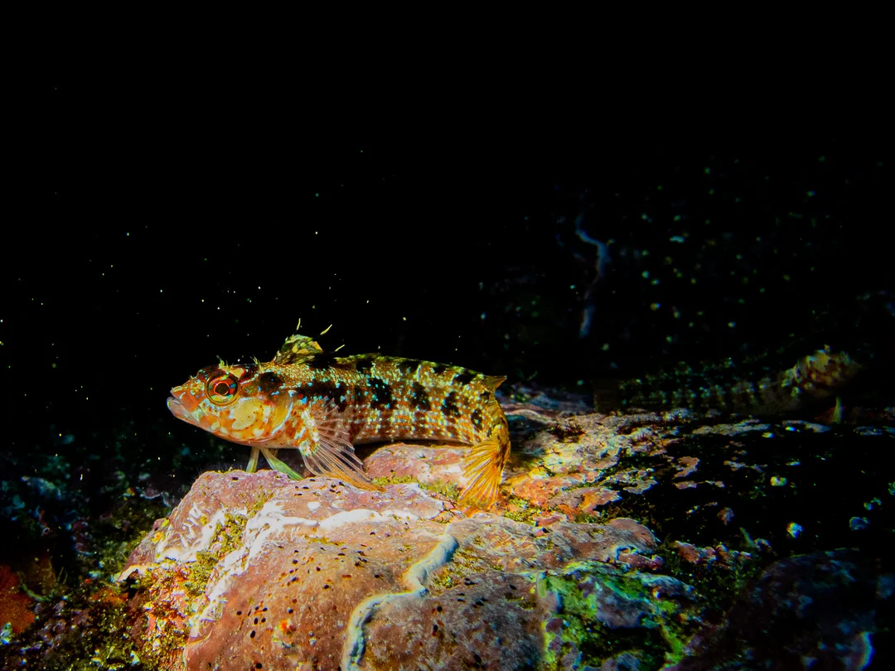
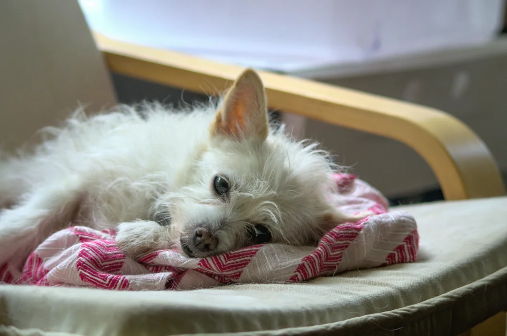
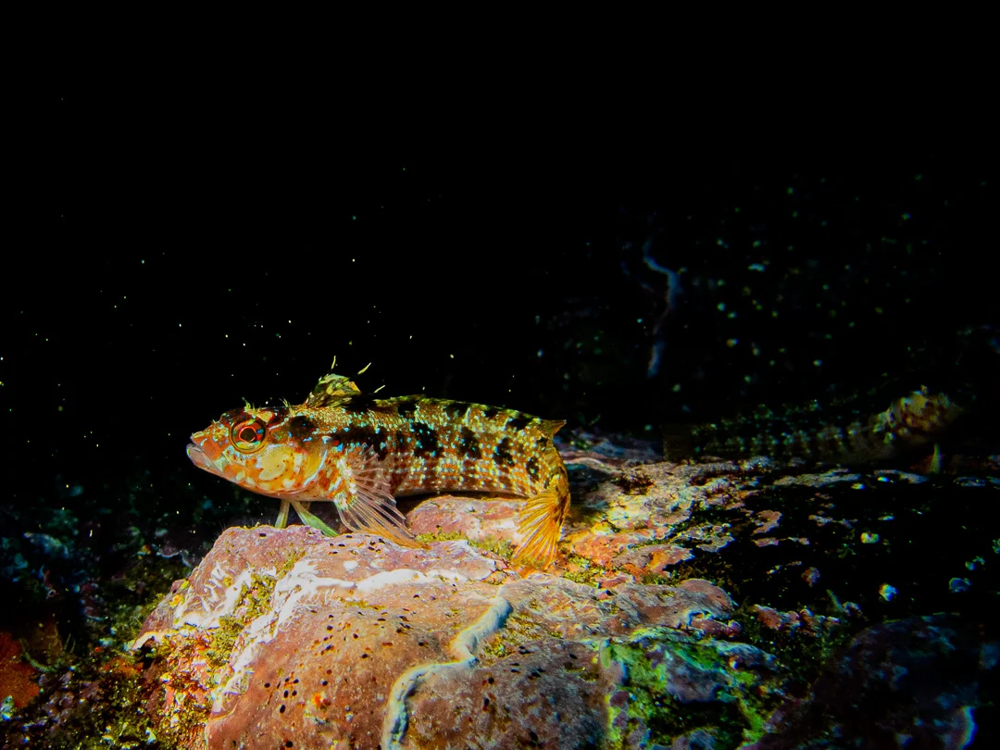
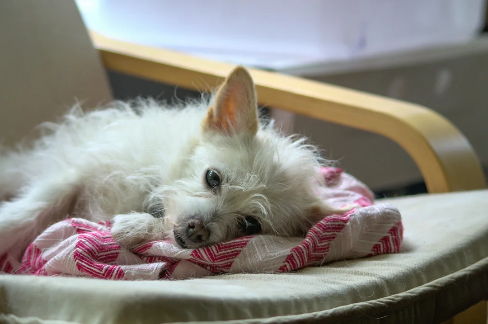

The Things I've Seen
To me, photography is about capturing a feeling, from the warmth of a smile to the unbounding awe elicited by our galaxy. I love engaging with many different genres of photography, as each has its own unique challenges that push me to adapt and grow. In my work, I primarily focus on nature, but I do also enjoy capturing emotions through portraiture.

 


